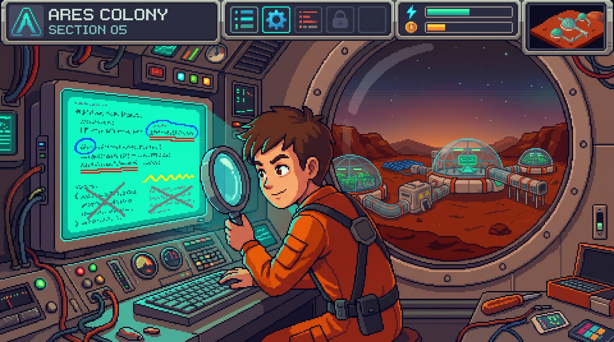
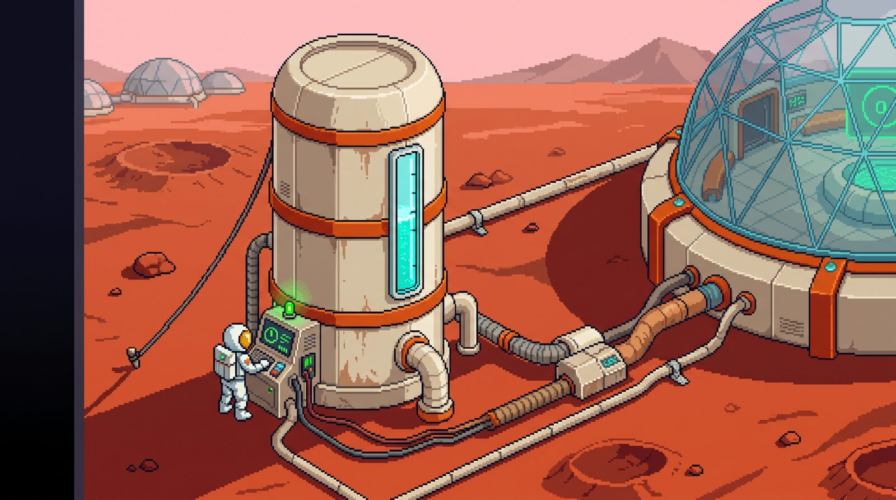
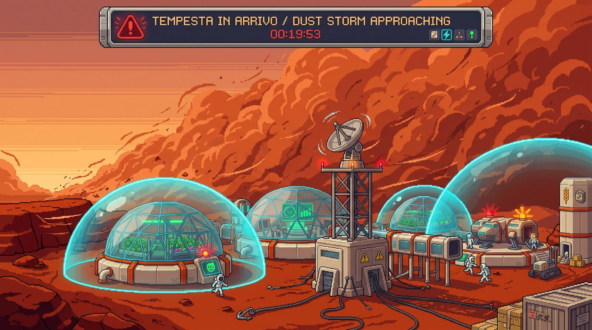
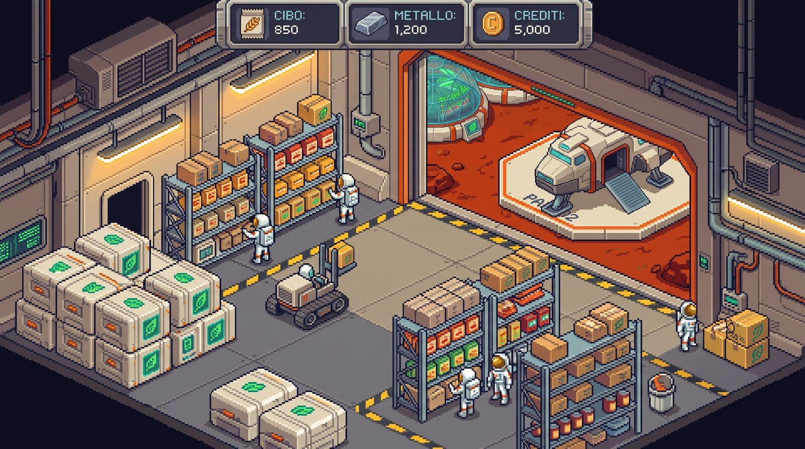
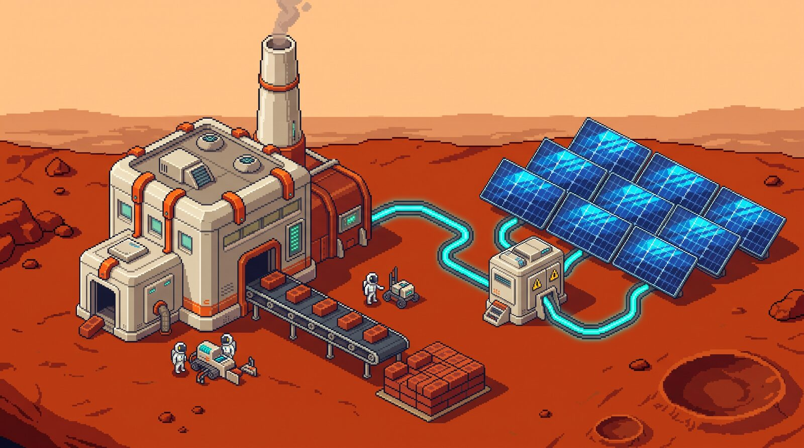
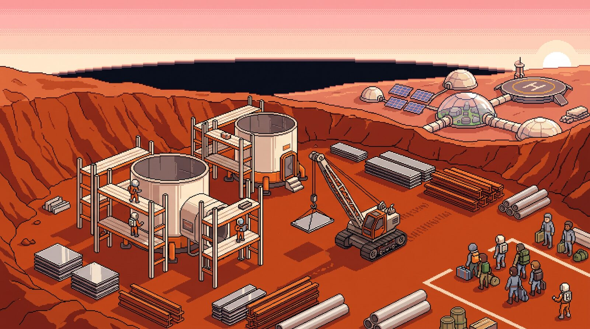
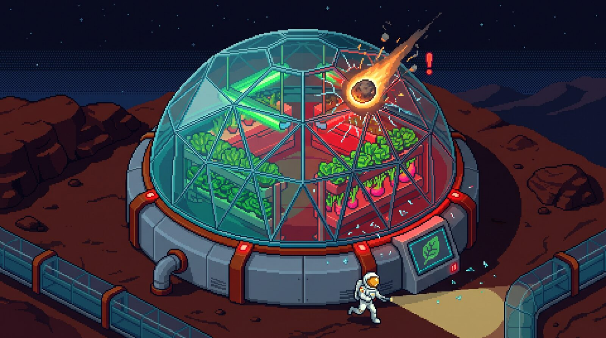

Capire il Problema:
Leggere da Programmatore
Prima di risolvere bisogna capire. Oggi impariamo a smontare il testo di un problema del nostro gestionale su Marte: troviamo i dati, la richiesta, le regole… e buttiamo via il rumore.

Il Bug Nato da Due Parole
Il programma era scritto benissimo. Peccato che il programmatore avesse letto male.
“L'allarme deve suonare quando nel serbatoio restano al massimo 10 unità di ossigeno.”
Con esattamente 10 unità: 10 è “al massimo 10”? Sì → l'allarme suona.
“L'allarme suona quando restano meno di 10 unità di ossigeno.”
Con esattamente 10 unità: 10 è “meno di 10”? No → l'allarme tace. I coloni restano senza avviso!
Lo Schema I-P-O: Il Filtro per Leggere un Problema
Ogni programma prende dati, li trasforma con delle regole e restituisce un risultato. Usiamolo per leggere!
INPUT
Cosa mi DAI?I dati noti: numeri, quantità, misure che il testo ci fornisce.
“40 unità di ossigeno, 12 coloni”
ELABORAZIONE
Quali REGOLE?I calcoli e le condizioni che collegano i dati al risultato.
“ogni colono consuma 3 unità… se basta…”
OUTPUT
Cosa mi CHIEDI?Il risultato da trovare o il messaggio da mostrare al giocatore.
“Allarme rosso: sì o no?”
Il Metodo del Programmatore in 5 Passi
Sempre nello stesso ordine, per ogni problema. Anche quando sembra facile.
Leggi due volte
1ª volta: capisci la storia.
2ª volta: vai a caccia di dati.
Evidenzia
Con i colori o con i simboli: dati, richiesta, regole, rumore.
Riformula
Una sola frase con parole tue:
“Devo capire se…”
Scheda I-P-O
Sul quaderno: Input, Elaborazione e Output, in ordine.
Prova a mano
Usa i numeri del testo. Poi prova il caso limite.
Il Kit dell'Evidenziatore: Colori e Simboli
Non hai gli evidenziatori? Nessun problema: basta una penna e questi simboli.
Il Dizionario: Parole che Diventano Confronti
Ogni regola nasconde un confronto matematico. Impariamo a tradurlo.
“almeno 50 di metallo”: con 50 va bene.
“al massimo 6 coloni”: 6 sì, 7 no.
“supera 120 km/h”: con 120 non supera.
“meno di 40 punti”: il 40 è escluso.
“resiste fino a 120 km/h”: il 120 è compreso.
“il cibo basta”: scorte ≥ fabbisogno.
“esattamente 10 coloni”: né 9 né 11.
“tutti i rover tranne il n° 2”.
Le 4 Trappole del Testo
Chi scrive un problema non lo fa per ingannarti… ma il testo è pieno di tranelli.
1. Il Rumore
Nomi, orari, colori e perfino numeri che non servono a niente.
“La serra ha perso il 40% delle piante” → può essere solo decorazione!
2. Il Dato Nascosto
Il testo non lo scrive, ma serve: lo devi tirare fuori tu.
“per una settimana” → ★ 7 giorni
3. Le Parole-Trappola
“Almeno” e “più di” sembrano uguali, ma il caso limite cambia tutto.
almeno 50 → 50 ≥ 50 VERO | più di 50 → 50 > 50 FALSO
4. Il Dato Mancante
A volte un'informazione indispensabile non c'è proprio.
Non inventarla! Scrivi ? e la domanda da fare.
Esempio Svolto: Il Turno dell'Ossigeno
Sono le 6:40 del mattino nella Colonia Alpha-1 e la sirena del cambio turno ha appena suonato. Il tecnico Rossi, arrivato su Marte da appena tre settimane, controlla il pannello del generatore. Ogni colono consuma 3 unità di ossigeno al giorno. Il serbatoio contiene 40 unità e nella colonia vivono 12 coloni. Se l'ossigeno del serbatoio basta per tutta la giornata, il pannello deve mostrare “Respirate tranquilli”; altrimenti deve far scattare l'allarme rosso. Cosa deve mostrare il pannello oggi?

Il Turno dell'Ossigeno: Smontiamo il Testo
Sono le 6:40 del mattino nella Colonia Alpha-1 e la sirena del cambio turno ha appena suonato. Il tecnico Rossi, arrivato su Marte da appena tre settimane, controlla il pannello del generatore. Ogni colono consuma 3 unità di ossigeno al giorno. Il serbatoio contiene 40 unità e nella colonia vivono 12 coloni. Se l'ossigeno del serbatoio basta≥ per tutta la giornata, il pannello deve mostrare “Respirate tranquilli”; altrimenti deve far scattare l'allarme rosso. Cosa deve mostrare il pannello oggi?
coloni = 12 • consumo a testa = 3
basta? → serbatoio ≥ fabbisogno
Caso limite: serbatoio = 36 → 36 ≥ 36 → basta ancora!
Ora Tocca a Voi: 5 Sfide da Programmatore
A coppie, con il foglio dei testi, il quaderno e gli evidenziatori (o una penna).
Come si lavora
- ink_highlighter Sul foglio dei testi: evidenzia con colori o simboli.
- edit_note Sul quaderno: la frase “Devo capire se…” e la scheda I-P-O.
- calculate Prova a mano: con i numeri del testo e con il caso limite.
- block Niente soluzioni: oggi ci interessa solo capire il problema.
Le 5 sfide (6 minuti l'una)
- storm1. Tempesta di Sabbia → caccia al rumore
- inventory_22. Razioni per la Settimana → il dato nascosto
- factory3. La Fabbrica di Mattoni → parole-trappola
- home_work4. Il Nuovo Quartiere → il dato mancante
- crisis_alert5. Il Meteorite → tutte insieme!
Sfida 1: La Tempesta di Sabbia
Il radar meteo della base Tharsis segnala una tempesta di sabbia in arrivo da nord-ovest, a 380 chilometri di distanza. Le raffiche sollevano la polvere rossa fino a 2 chilometri di altezza. La comandante Okafor, al suo secondo anno di missione, posa il caffè liofilizzato e ordina di controllare gli scudi. Gli scudi della cupola resistono a venti fino a 120 km/h; il radar stima che la tempesta soffierà a 135 km/h. Se il vento supera la resistenza degli scudi, i coloni devono rifugiarsi nel bunker; altrimenti possono restare nelle cupole. Dove devono andare i coloni?

assignmentLa tua consegna
- Evidenzia (colori o simboli).
- Riformula: “Devo capire se…”
- Scheda I-P-O + prova a mano.
Occhio a: tanti numeri… ma quali servono davvero?
La Tempesta di Sabbia: Smontiamo il Testo
Il radar meteo della base Tharsis segnala una tempesta di sabbia in arrivo da nord-ovest, a 380 chilometri di distanza. Le raffiche sollevano la polvere rossa fino a 2 chilometri di altezza. La comandante Okafor, al suo secondo anno di missione, posa il caffè liofilizzato e ordina di controllare gli scudi. Gli scudi della cupola resistono a venti fino a≤ 120 km/h; il radar stima che la tempesta soffierà a 135 km/h. Se il vento supera la resistenza degli scudi>, i coloni devono rifugiarsi nel bunker; altrimenti possono restare nelle cupole. Dove devono andare i coloni?
velocità del vento = 135 km/h
Caso limite: vento = 120 → 120 > 120 FALSO → gli scudi reggono (“fino a”).
Sfida 2: Razioni per la Settimana
La navetta cargo Ares-3 è atterrata ieri sera sulla pista n° 2, ma il comandante vuole sapere se il cibo in magazzino basta per una settimana intera, senza aspettare il prossimo rifornimento. Nella colonia vivono 10 coloni e ognuno mangia 2 razioni al giorno. Nel magazzino ci sono 150 razioni. Le razioni preferite dai coloni sono quelle alla soia affumicata. Se il cibo non basta, bisogna ordinare un rifornimento urgente dalla Terra. Serve il rifornimento?

assignmentLa tua consegna
- Evidenzia (colori o simboli).
- Riformula: “Devo capire se…”
- Scheda I-P-O + prova a mano.
Occhio a: c'è un numero che il testo non scrive…
Razioni per la Settimana: Smontiamo il Testo
La navetta cargo Ares-3 è atterrata ieri sera sulla pista n° 2, ma il comandante vuole sapere se il cibo in magazzino basta≥ per una settimana intera★ 7 giorni, senza aspettare il prossimo rifornimento. Nella colonia vivono 10 coloni e ognuno mangia 2 razioni al giorno. Nel magazzino ci sono 150 razioni. Le razioni preferite dai coloni sono quelle alla soia affumicata. Se il cibo non basta<, bisogna ordinare un rifornimento urgente dalla Terra. Serve il rifornimento?
razioni a testa al giorno = 2 • ★ giorni = 7
basta? → razioni ≥ fabbisogno
Senza il ★: 10 × 2 = 20 → risposta giusta per caso, ragionamento sbagliato!
Sfida 3: La Fabbrica di Mattoni
Il consiglio della colonia ha votato all'unanimità: è arrivato il momento di accendere la nuova fabbrica di mattoni. Per partire, la fabbrica ha bisogno di almeno 50 unità di energia libera. La centrale solare produce 200 unità, mentre gli edifici già accesi ne consumano 150. Se l'energia libera è meno di 50, la fabbrica resta spenta e i muratori tornano a giocare a carte nella mensa; altrimenti la fabbrica si accende. La fabbrica si accende?

assignmentLa tua consegna
- Evidenzia (colori o simboli).
- Riformula: “Devo capire se…”
- Scheda I-P-O + prova a mano.
Occhio a: “almeno” e “meno di”. E se viene esattamente 50?
La Fabbrica di Mattoni: Smontiamo il Testo
Il consiglio della colonia ha votato all'unanimità: è arrivato il momento di accendere la nuova fabbrica di mattoni. Per partire, la fabbrica ha bisogno di almeno≥ 50 unità di energia libera. La centrale solare produce 200 unità, mentre gli edifici già accesi ne consumano 150libera = 200 − 150. Se l'energia libera è meno di< 50, la fabbrica resta spenta e i muratori tornano a giocare a carte nella mensa; altrimenti la fabbrica si accende. La fabbrica si accende?
soglia = 50
“almeno” → libera ≥ 50 (il contrario: libera < 50)
Chi ha letto “più di 50”: 50 > 50 FALSO → fabbrica spenta. Bug!
Sfida 4: Il Nuovo Quartiere
Con l'ultima navetta sono arrivati 9 nuovi coloni che non hanno ancora un letto. Il sindaco Hernández, che ama i nomi poetici, ha già deciso di chiamare il nuovo quartiere “Valle dell'Alba”. Ogni modulo abitativo ospita al massimo 6 coloni e costa 80 unità di metallo. Se il metallo in magazzino basta, si costruiscono tutti i moduli necessari; altrimenti i nuovi coloni dormono nella palestra della base. Quanti moduli servono? Si possono costruire?

assignmentLa tua consegna
- Evidenzia (colori o simboli).
- Riformula: “Devo capire se…”
- Scheda I-P-O + prova a mano.
Occhio a: riesci davvero a rispondere? Cosa ti manca?
Il Nuovo Quartiere: Smontiamo il Testo
Con l'ultima navetta sono arrivati 9 nuovi coloni che non hanno ancora un letto. Il sindaco Hernández, che ama i nomi poetici, ha già deciso di chiamare il nuovo quartiere “Valle dell'Alba”. Ogni modulo abitativo ospita al massimo≤ 6 coloni e costa 80 unità di metallo. Se il metallo in magazzino basta≥? quanto metallo c'è, si costruiscono tutti i moduli necessari; altrimenti i nuovi coloni dormono nella palestra della base. Quanti moduli servono? Si possono costruire?
metallo in magazzino = ? MANCA
costo = 2 × 80 = 160 → metallo ≥ 160
Se fossero 200 → 200 ≥ 160 → 2 moduli costruiti.
Sfida Finale: Il Meteorite sulla Serra
Durante la lunga notte marziana, mentre la colonia dorme, un piccolo meteorite colpisce la serra idroponica. L'ingegnera capo Lindqvist, svegliata dall'allarme, corre a controllare in tuta pressurizzata: la serra ha perso il 40% delle piante e 4 pannelli di vetro sono in frantumi. Riparare un pannello costa 30 unità di metallo. Se il metallo in magazzino è almeno pari al costo della riparazione, la serra viene riparata subito; se invece non basta, la serra resta chiusa fino al prossimo rifornimento. In magazzino ci sono 100 unità di metallo. La serra verrà riparata?

assignmentLa tua consegna
- Evidenzia (colori o simboli).
- Riformula: “Devo capire se…”
- Scheda I-P-O + prova a mano.
Occhio a: qui le trappole sono tutte insieme!
Il Meteorite sulla Serra: Smontiamo il Testo
Durante la lunga notte marziana, mentre la colonia dorme, un piccolo meteorite colpisce la serra idroponica. L'ingegnera capo Lindqvist, svegliata dall'allarme, corre a controllare in tuta pressurizzata: la serra ha perso il 40% delle piante e 4 pannelli di vetro sono in frantumi. Riparare un pannello costa 30 unità di metallocosto = 4 × 30. Se il metallo in magazzino è almeno pari≥ al costo della riparazione, la serra viene riparata subito; se invece non basta<, la serra resta chiusa fino al prossimo rifornimento. In magazzino ci sono 100 unità di metallo. La serra verrà riparata?
metallo in magazzino = 100
“almeno pari” → metallo ≥ costo
Caso limite: metallo = 120 → 120 ≥ 120 → riparata!
Errori Tipici e Checklist del Programmatore
Prima di dire “ho capito”, controlla con il compagno di banco.
Gli errori più comuni
- closePartire a risolvere dopo una sola lettura.
- closeCerchiare tutti i numeri (anche il 40% e i 380 km).
- closeDimenticare il dato nascosto (i 7 giorni).
- closeLeggere “almeno” come “più di”.
- closeInventare un dato mancante invece di chiederlo.
La checklist
- check_boxHo letto il testo due volte?
- check_boxHo barrato il rumore?
- check_boxOgni dato ha un nome e un valore?
- check_boxHo trovato la richiesta (doppia riga)?
- check_boxHo tradotto le regole in confronti (≥, <…)?
- check_boxHo provato con i numeri e con il caso limite?
Ultima Prova: Il Rover Esploratore
Il rover Curiosity-2, verniciato di arancione, consuma 5 unità di energia per ogni uscita e ha la batteria carica a 18 unità. Il comandante vuole sapere se il rover può fare almeno 3 uscite prima di ricaricarsi.
confirmation_numberSu un foglietto
- Riscrivi i dati con nome e valore.
- Scrivi la richiesta.
- Rispondi con la prova a mano.
Il Rover Esploratore: Smontiamo il Testo
Il rover Curiosity-2, verniciato di arancione, consuma 5 unità di energia per ogni uscita e ha la batteria carica a 18 unità. Il comandante vuole sapere se il rover può fare almeno≥ 3 uscite prima di ricaricarsi.